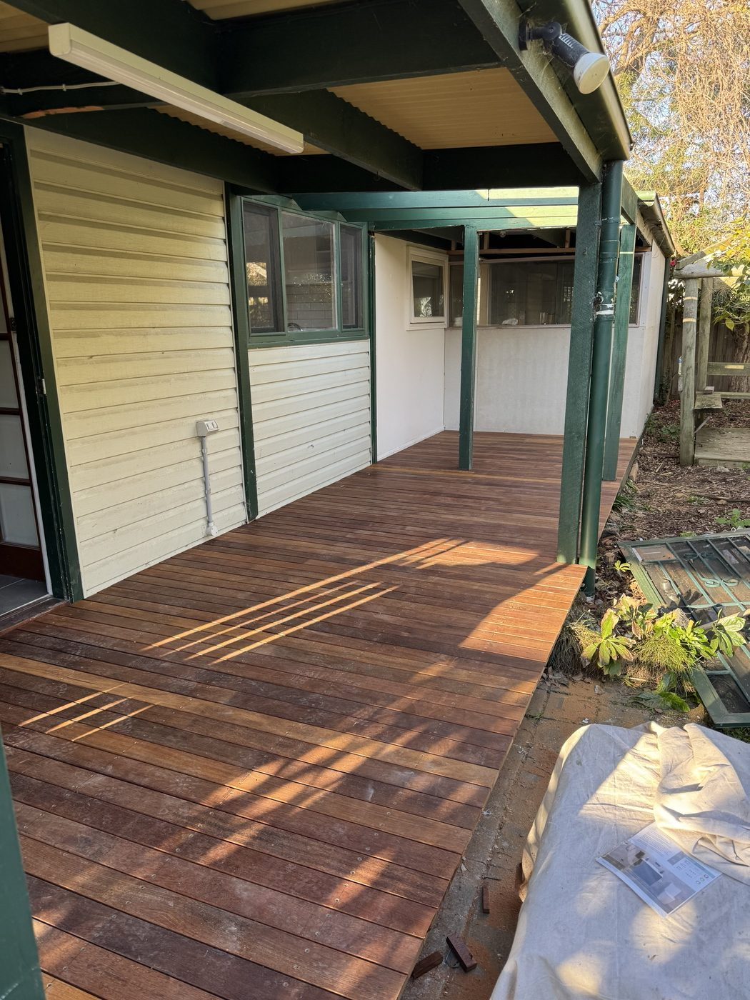
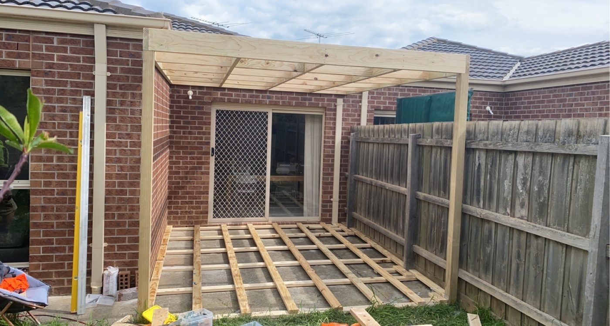
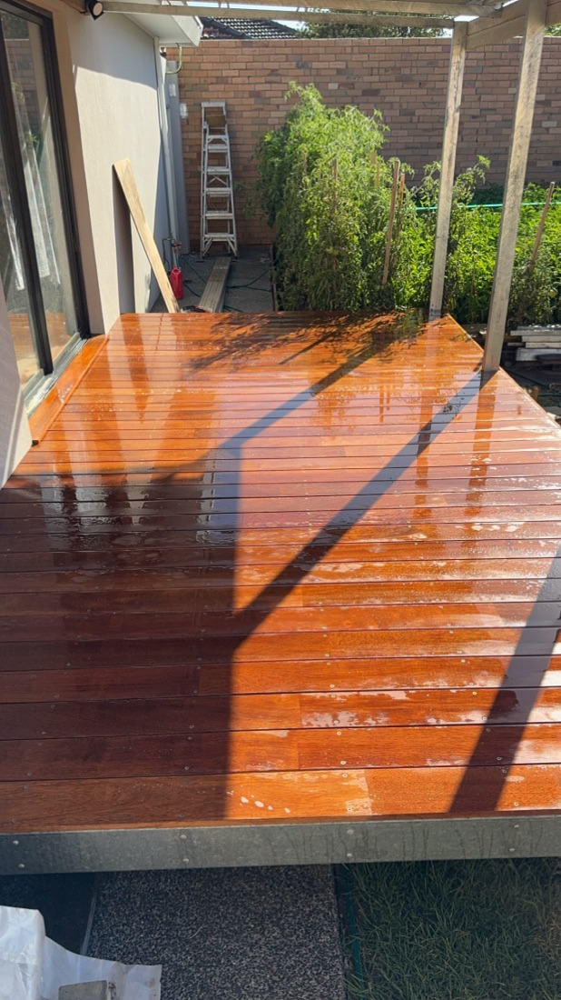
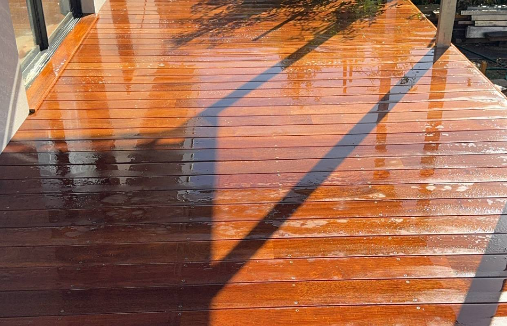

Decks & pergolas in Footscray.
Hardwood decks and pergolas for Footscray homes, built to handle Melbourne weather and finished to last.


Decks & pergolas in Footscray
Outdoor timber, built for Footscray homes

Footscray's streets are full of Victorian terraces, workers' cottages and California bungalows, many now being renovated and extended. On compact inner-west blocks a well-built deck is some of the most valuable living space you can add, turning a tight backyard into a proper place to sit, cook and entertain.
We build hardwood and merbau decks, pergolas, patios and privacy screens that suit the character of Footscray homes and stand up to the local climate. Every job is set out properly, built by a qualified carpenter and oiled so it still looks the part years down the track.
- Hardwood and merbau decking
- Pergolas, patios and verandahs
- Timber screens and privacy structures
- Oiling and finishing
What we build
Outdoor timber, done properly.
From a compact rear deck to a full pergola over the alfresco, we build the outdoor structures that make a backyard usable.
Decks
Hardwood and merbau decks on a sound sub-frame, set out for drainage and finished level with your indoor floors so inside and out flow together.
Pergolas & verandahs
Pergolas, verandahs and patio roofs for shade and shelter, sized and pitched to suit the house and built to handle Melbourne's wind and rain.
Screens & privacy
Timber privacy screens, slatted panels and balustrades that block the wrong sightlines and tidy up the edges of a deck or courtyard.
Repairs & restoration
Reboarding, re-levelling and re-oiling tired decks, plus repairs to rot, movement or a sub-frame that has seen better days.
Choosing the right timber
The timber sets the look and the upkeep.
The timber you choose sets how the deck looks and how much upkeep it asks for. Australian hardwoods like spotted gum and blackbutt are dense, hard-wearing and take an oil finish beautifully. Merbau is a popular mid-range option, rich in colour and stable underfoot. Treated pine is the budget choice and works well painted or under a roof.
Near the bay, salt air and sun are hard on outdoor timber, so the finish matters as much as the species. We oil decks to feed the timber and slow the greying, and we will tell you honestly what each option needs year to year so there are no surprises. If you would rather not oil at all, we will talk through low-maintenance and composite alternatives too.
From measure to handover.
Every job runs the same way: a free on-site measure, a fixed written price, and one qualified carpenter from the first call to handover.
Get a free quote- 01
Get in touch
Tell us about your yard, the look you are after and rough timing.
- 02
Free on-site measure
We visit, take levels, talk through timber and design, and confirm scope.
- 03
Fixed written quote
A clear price with no mid-job surprises, and a booked start date.
- 04
Built & finished
One carpenter through to handover, oiled and the site left clean.
Do you build decks and pergolas in Footscray?
Yes. Timbr Built is based in Melbourne's inner west and works across Melbourne's inner west, including Footscray and the surrounding suburbs. Every job starts with a free on-site measure, then a fixed written quote with no obligation.
How much does a deck cost?
It depends on the size, the timber you choose, the height off the ground and whether a permit is needed. Rather than guess, we give you a fixed written quote after a free on-site measure, so the price you see is the price you pay.
What timber is best for a deck in Melbourne?
For most jobs we recommend an Australian hardwood like spotted gum or blackbutt, or merbau as a mid-range option. All three handle our weather well and take an oil finish. We will walk you through the trade-offs in cost, colour and upkeep before you decide.
Do I need a permit for a deck or pergola in Footscray?
Sometimes. Low decks and small pergolas often do not, but height, size and boundary setbacks can trigger a building permit, and the City of Maribyrnong sets the local planning rules. We will let you know where your job sits and sort the paperwork if it is needed.
How long will my deck take to build?
Most residential decks and pergolas are a matter of days to a couple of weeks on site once we start, depending on size and access. You will get a realistic timeline with your quote.
Do you repair or restore old decks?
Yes. We reboard, re-level and re-oil tired decks, and repair rot, movement or a failing sub-frame. If it is worth saving we will tell you, and if it is not, we will tell you that too.
Serving Footscray
Local, and close by.
Timbr Built is based in Melbourne's inner west and works throughout Melbourne's inner west, part of the City of Maribyrnong. We also build decks and pergolas in nearby Seddon, Yarraville and West Footscray. If your suburb is not listed, get in touch and we will let you know.

Planning a deck or pergola in Footscray?
Tell us about your yard and we will book a free on-site measure in Footscray, then come back with a fixed written quote in time for summer.